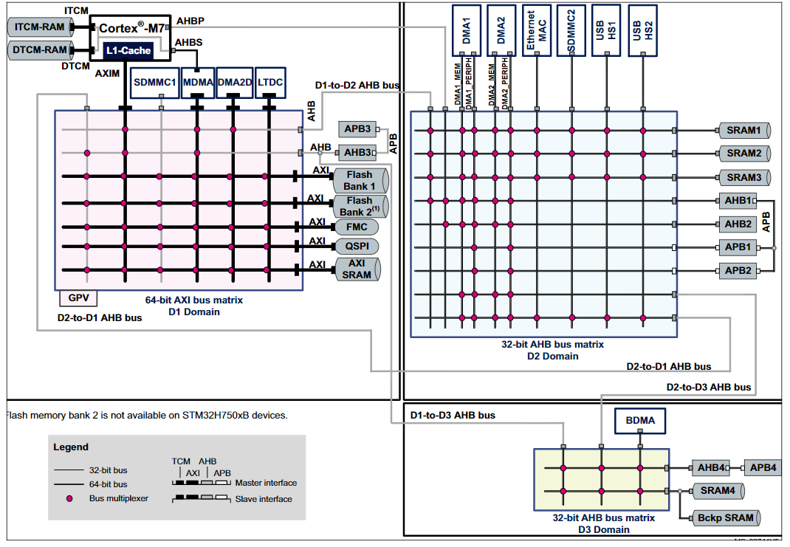
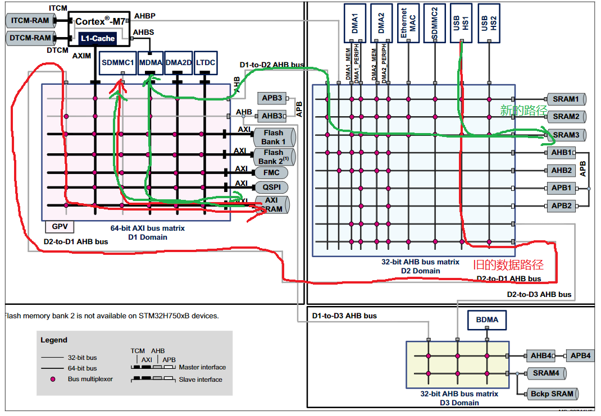
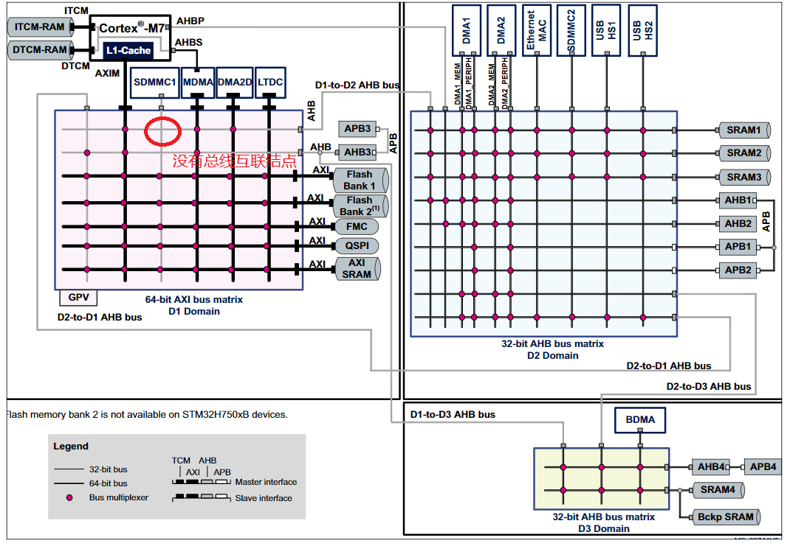

当你有多个选择，但是每个选择都不完美时，就会出现选择焦虑！
最近在优化单片机上USB协议栈内的代码，我发现了一个我之前没有被注意到的地方，那就是写入到USB端点上的数据是由DMA自动完成的，涉及到DMA的内存区域都需要特别对待，而我之前就是将它当作普通内存处理，也就是普通内存的缓存策略(庆幸运行了这么久居然没出错)。
由于单片机内的内存分布比较复杂，所以我决定在解决这个问题时顺便优化一下内存布局。这是单片机的总线连接情况，看起来比较复杂。

仔细看看总线的连接情况，发现一个很蠢的事情，目前USBHS1(可以理解为USB的专用DMA)操作的数据位于AXISRAM上，中间要经过一个D2-to-D1 AHB bus的通道，我认为这太不合理了，因为D2域也有三块内存，我决定将USB的缓存调整到D2的SRAM3上，毕竟AXISRAM内存与CPU的交互较多，这样USB的DMA传输数据就几乎能独享到SRAM3的内存总线带宽了，而不用占用D1域的总线矩阵。这样还有一个好处是使用MPU配置缓存策略也比较方便。

不过我改完了之后就发现了新的问题。因为USB协议栈中实现了大容量存储设备实例，需要用到内存卡SDMMC1，这就出现一个新的问题。SD卡的数据操作也是专用的DMA，我使用的是SDMMC1，硬件已经决定了我无法调整到SDMMC2上。观察D1总线矩阵就能看到，SDMMC1无法访问到D2域上。

要解决这个问题就只能让MDAM或者CPU帮忙，把数据从D2域拷贝到D1域的AXISRAM中，然后SDMMC的DMA就能操作数据了。
为了优化数据总线上的负载反而带来了更多的数据总线操作，这就更蠢了。
在这里纠结了好久，最后选择在AXISRAM末尾使用约8K字节的数据用来作为USB的缓存，并将它配置为非缓存的模式。
还是感觉不爽😔，为什么D1域上的SDMMC1不能访问D2，是故意这样设计的吗？
- 本文标题：单片机总线选择焦虑
- 本文作者：DazzlingOkami
- 创建时间：2022-12-09 18:12:32
- 本文链接：https://dazzlingokami.github.io/2022/12/09/单片机总线选择焦虑/
- 版权声明：本博客所有文章除特别声明外，均采用 BY-NC-SA 许可协议。转载请注明出处！